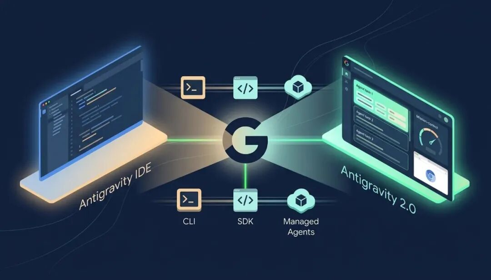

哈喽，我是飞飞。
5 月 19 日凌晨我熬夜看了 Google I/O 2026 的 keynote，看到中段那张产品全景图弹出来的时候我直接坐直了。
Antigravity 不再是一个产品了。
它被拆成两个独立的桌面应用，加上一个 CLI、一个 SDK、一组 Managed Agents API，五个 surface 同时往外铺。
第二天我把两个桌面应用都装到了 macOS 上，分别打开看了一遍。
老的那个 Antigravity IDE 长得跟我之前熟悉的样子完全一样，VS Code fork 的编辑器界面，左侧文件树右侧编辑区。
新的那个 Antigravity 2.0 完全不一样，打开是一个 Mission Control 风格的看板，左边一栏挂着我跑过的 agent 任务，中间是当前 agent 的实时执行流，右边是它正在浏览的网页 preview。
我盯着新这个看了 30 秒才反应过来一件事。
Google 这次干的事不只是发了个 2.0 版本，他们在产品形态上公开承认编辑器界面在 AI 编程里已经退到次要位置，承担主线的是 agent harness。
Google 这次到底把 Antigravity 拆成了几块
先把全景画清楚。
Antigravity 原本（2025 年 11 月发布）只有一个东西，就是那个 VS Code fork 的 IDE，Cursor 的对标产品。
I/O 2026 这次拆完之后变成 5 个 surface 并列。
Antigravity 2.0 desktop app:全新桌面应用，跟原来的 IDE 是两个完全独立的程序，围绕 agent orchestration 设计，不带传统写代码界面。
Antigravity IDE:原来那个 VS Code fork 编辑器，保留下来继续维护，定位是"agent-first 平台里的一个 surface"。
Antigravity CLI:新写的命令行工具，用 Go 重新实现，完全替代原来的 Gemini CLI。
Antigravity SDK:给开发者自己写 agent 用，可以部署到自己基础设施。
Managed Agents（在 Gemini API 里）+ Enterprise Agent Platform:一次 API 调用就能拉起一个隔离的 Linux 环境跑 agent，企业客户走 Google Cloud 直连。
5 个 surface 都共享同一套底层 agent harness，底模型默认是 Gemini 3.5 Flash。
这套结构和 Anthropic 那一套（Claude Code IDE + Claude Code CLI + Claude API + Managed Agents）几乎完全对齐了。
Antigravity IDE 保留下来，但定位变了
很多人以为 Antigravity IDE 这次会被砍掉。
实际上没有。
实话讲，它的定位明显变了。
原来 Antigravity 就是 IDE 本身，IDE 等于产品。
现在 Antigravity IDE 是 5 个 surface 里的一个，是写代码场景下的 surface，跟 desktop app（agent 场景）、CLI（终端场景）、SDK（自部署场景）、Managed Agents（API 调用场景）并列。
我打开 Antigravity IDE 看了一下，界面没大变，但产品定位文档里明确写了一句:「For traditional coding with AI help」。
翻译过来就是，如果你主要的动作还是写代码，用这个。
如果你主要的动作是布置任务给 agent 让它去跑，那应该切到 2.0 desktop app。
这个分界对我自己来说很清楚。
写函数、读代码、debug，编辑器仍然是最顺的形态。
但批量 refactor、跑测试、查文档、写 commit message 这种周边动作，编辑器界面其实是冗余的，agent 直接在后台跑然后给我看结果效率更高。
Google 把 Antigravity 拆开就是承认这个分界。
Antigravity 2.0 desktop app 是个全新东西
我装完 2.0 desktop app 第一次打开的时候有点懵。
它没有文件树。
也没有编辑区。
打开是一个 dashboard，最显眼的是中央那块叫 Mission Control 的区域，挂着我可以并行触发的 agent，每个 agent 旁边有运行状态、用了多少 token、跑了多久。
我让它做了一个简单任务，"用 Tailwind 实现一个 todo list demo 并部署到 Firebase Hosting"。
它启动了 3 个 subagent，一个负责架构和文件结构、一个负责写 React 代码、一个负责跑 build 和发布。
Mission Control 实时画出 3 个 agent 的执行流。
中央位置内嵌了一个 Chromium 浏览器窗口，agent 跑到部署阶段的时候直接在那个窗口里打开了部署预览。
整个过程我没有看过一行代码，全程像在看一个项目进度看板。
跑完之后任务进了"已完成"列表，结果是一个能访问的 URL。
这种产品形态，跟传统 IDE 的"我打开文件看光标在哪一行"是完全不同的认知模型。
它有一个我之前在其他工具里没见过的功能叫 Scheduled Tasks，可以让 agent 在后台按时间自动跑。
比如我让它每天早上 9 点自动 pull 一遍我的 GitHub 上 watch 的几个 repo，把 release notes 整理成中文摘要发到我邮箱。
我设了一个之后，今天早上 9 点 02 分确实收到了邮件。
说白了，Antigravity 2.0 把 agent 从"我每次主动 prompt 它"变成了"它在后台自己活着"。
这是 IDE 这种形态做不到的事。
Antigravity CLI 用 Go 重写，Gemini CLI 6 月 18 日 EOL
CLI 这条线值得单独说。
新的 Antigravity CLI 是 Google 拿 Go 重写的，原来的 Gemini CLI 是 TypeScript 写的。
这里有两个信号。
一个是性能。
Go 启动比 Node.js 快得多，对一个高频在终端调用的工具，启动延迟从几百毫秒降到几十毫秒，每天累计省不少时间。
另一个信号是对标。
Claude Code 也是 Go 写的。
Google 这次重写等于明确表态要在 CLI 战场跟 Anthropic 正面打。
迁移的时间表也很紧。
Google 在 developer blog 里写了，2026 年 6 月 18 日起，Gemini CLI 和 Gemini Code Assist IDE 扩展对 AI Pro、AI Ultra 和免费用户停止服务。
从 5 月 19 日公告到 6 月 18 日停服，只有 30 天。
对国内大量正在用 Gemini CLI 的开发者来说，这 30 天必须做完两件事，一是装 Antigravity CLI 看跟自己原来的工作流配不配合，二是把 Gemini CLI 上的 Agent Skills、Hooks、Subagents 这些自定义配置迁过去。
好消息是这几样核心功能 Antigravity CLI 都保留了，Extensions 改名叫 Antigravity plugins。
坏消息是迁移文档目前只有一份初版，遇到细节差异官方还没给完整对照表。
企业版（Gemini Code Assist Standard / Enterprise license）不受这次 EOL 影响，继续用 Gemini CLI 没问题。
拆分背后 Google 在传递的工程信号
把这次拆分往后退一步看，能读出两层东西。
表层是 Google 在产品 SKU 上做了分化，给不同场景的用户切了不同入口。
往下一层，是 Google 用产品形态明确划了一条线:写代码的核心动作交给 IDE，跑 agent 的核心动作交给 desktop app。
往再下一层，是 Google 公开承认 IDE 这个 1970 年代发明的产品形态已经不能承载 2026 年的 AI 编程需求了。
IDE 当然没有被淘汰，它仍然是写代码这件事的最佳形态。
但 AI 编程这件事的工作内容早就不只是写代码了，它有 50% 的时间是在 review、refactor、跑测试、查文档、做架构决策、写 commit。
这 50% 的工作不需要光标停在某一行，它需要的是 agent 在后台异步跑然后给我看结果。
Google 拆 Antigravity 这件事，本质上是把这个产品形态分化第一次明确写到 release note 里。
Anthropic 那边其实早就用 Claude Code IDE + Claude Code CLI + Managed Agents API 这套结构在做同样的事，Google 这次只是补齐了产品线。
后面要看的是 OpenAI 会怎么走，Codex CLI 目前还是一个独立产品，OpenAI 没有官方 IDE。
我装完之后实际遇到的几个坑
讲一下我自己装的时候踩到的几件事。
先说 macOS 这边。
两个程序的进程名很接近，Activity Monitor 里都叫 Antigravity，得看 PID 区分。
Windows 用户的情况更夸张，国外论坛已经在抱怨这件事。
AppData 目录被偷偷拆成了两个，老的 Antigravity 数据在 \Roaming\Antigravity 路径下，新的 2.0 装完之后只读 \Roaming\Antigravity IDE，老用户工作环境直接被破坏。
Reddit 上有 thread 标题就叫「Antigravity 2.0 a rushed un-tested release」，Techloy 的报道说 "developers furious"。
如果你是 Windows 上原 Antigravity 用户，建议先备份 \Roaming\Antigravity 目录再装 2.0。
订阅价位这次也跟着调整了。
Google 加了一档新的 AI Ultra at $100 月，5x Pro limits。
老顶配 AI Ultra 从 $250 降到 $200，20x Pro limits。
这个定价跟 Anthropic 的 Claude Max（$100/$200 两档）几乎一模一样，跟 OpenAI 的 ChatGPT Pro（$100 + Codex CLI）也对齐了。
三大 lab 现在订阅结构基本同质化。
默认模型换成 Gemini 3.5 Flash 这件事单独说一下。
它比 Gemini 3.1 Pro 在几乎所有 benchmark 上都赢，比前沿模型快 4 倍。
更有意思的是，Gemini 3.5 Flash 本身是用 Antigravity 共开发的。
模型反过来开发自己的工具，工具又被用来训下一代模型，这条 meta loop 跟 Karpathy 加入 Anthropic 那边「用 Claude 加速 pre-training」是同一个故事。
所有前沿 lab 都在押这一招。
Gemini CLI 迁移截止日和 scheduled tasks 实测这两件事
我自己 Gemini CLI 上有 5 个 custom agent skill，会在 6 月 10 号前全部迁到 Antigravity CLI，留 8 天 buffer 应对迁移过程中可能踩的坑。
另一个是用 Antigravity 2.0 desktop app 的 scheduled tasks 跑一个真实场景:每周一早上 8 点自动 pull 我 watch 的 AI lab 仓库的 release notes，整理成中文摘要发到我自己邮箱。
跑两周之后我会写一篇实测，看 scheduled tasks 的稳定性、调度延迟、Token 消耗这几个具体数据。
你呢，你用的 Cursor、Claude Code 还是 Gemini CLI？
要不要在 6 月 18 日之前一起试试 Antigravity 2.0？
评论区告诉我，下一篇我可以专门写「Gemini CLI 配置迁移到 Antigravity CLI 的完整记录」。